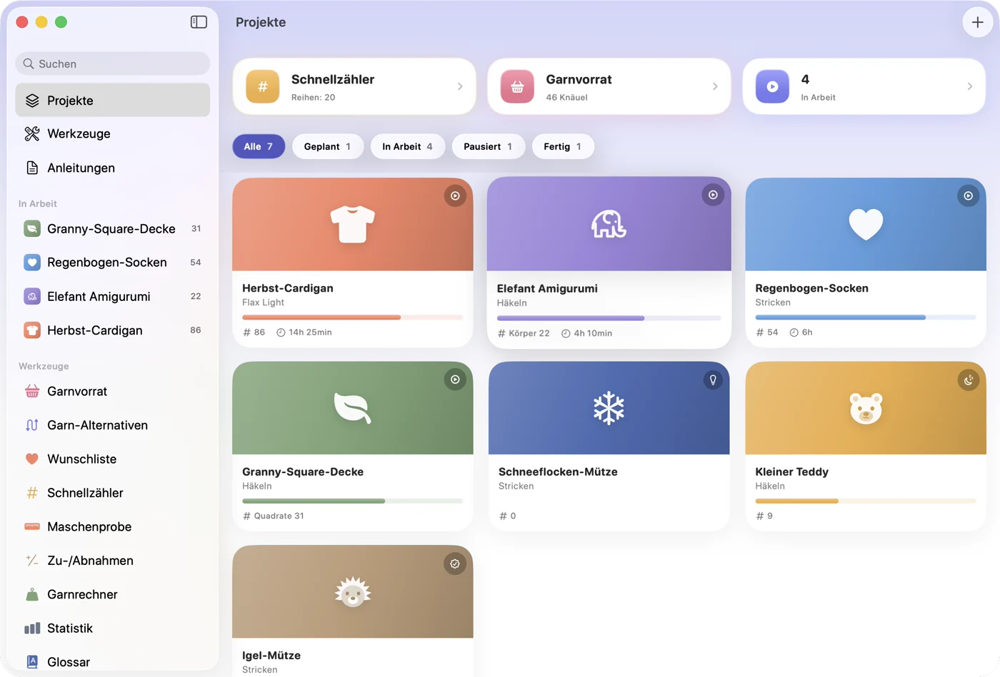
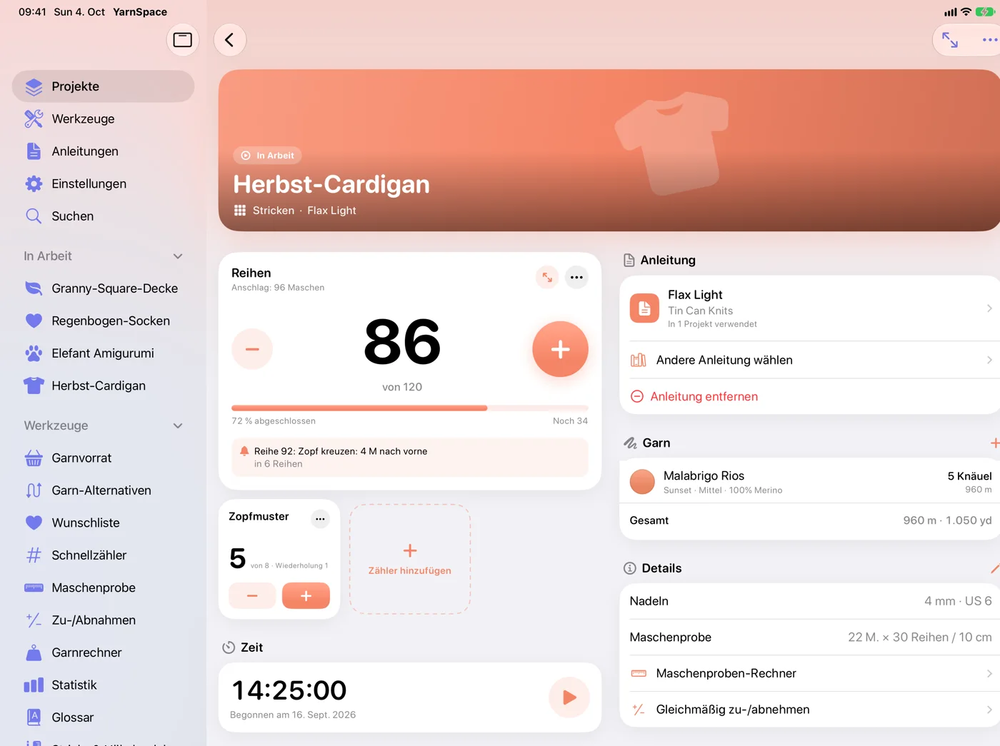
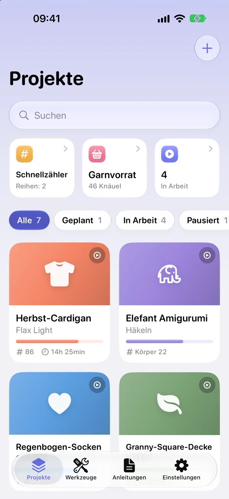
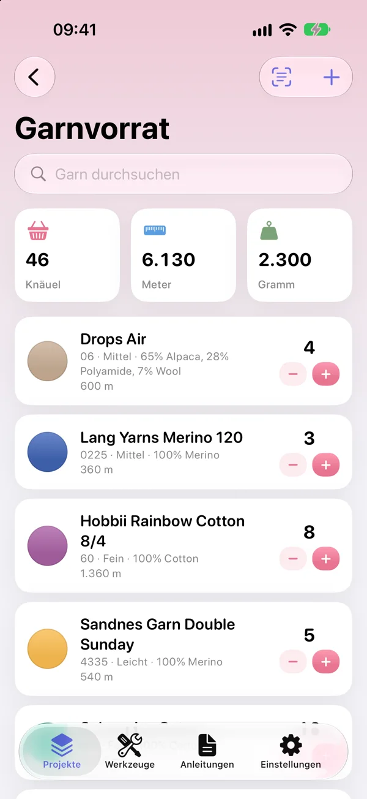
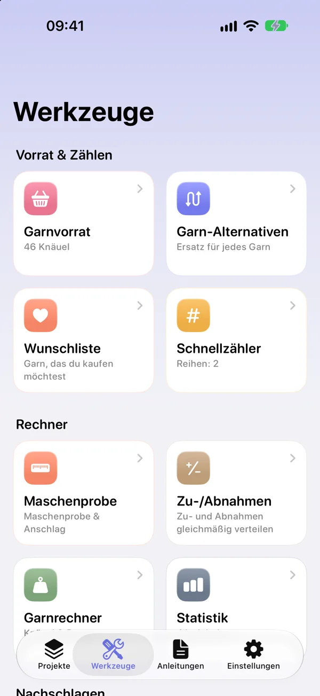
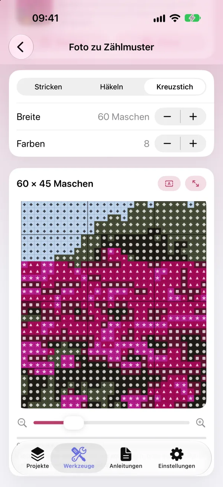
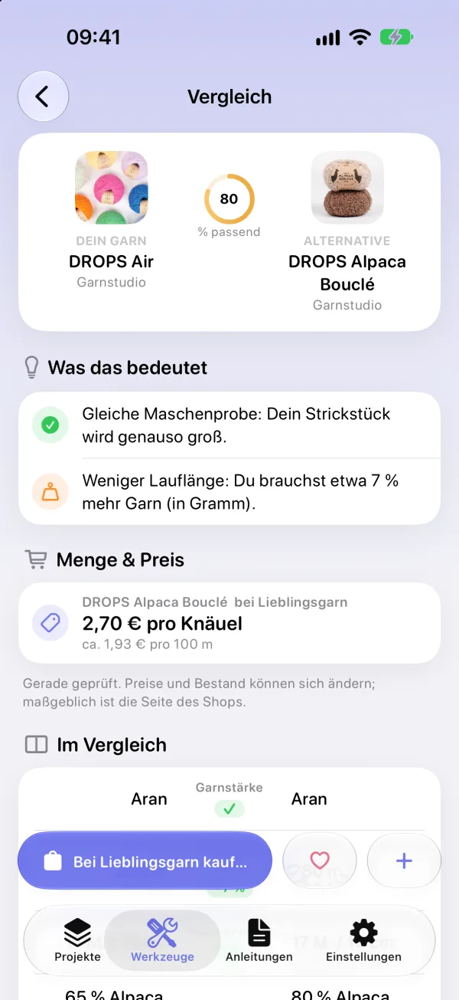
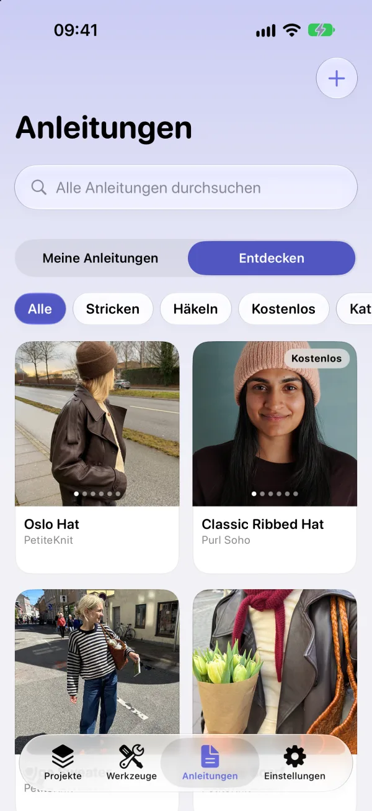
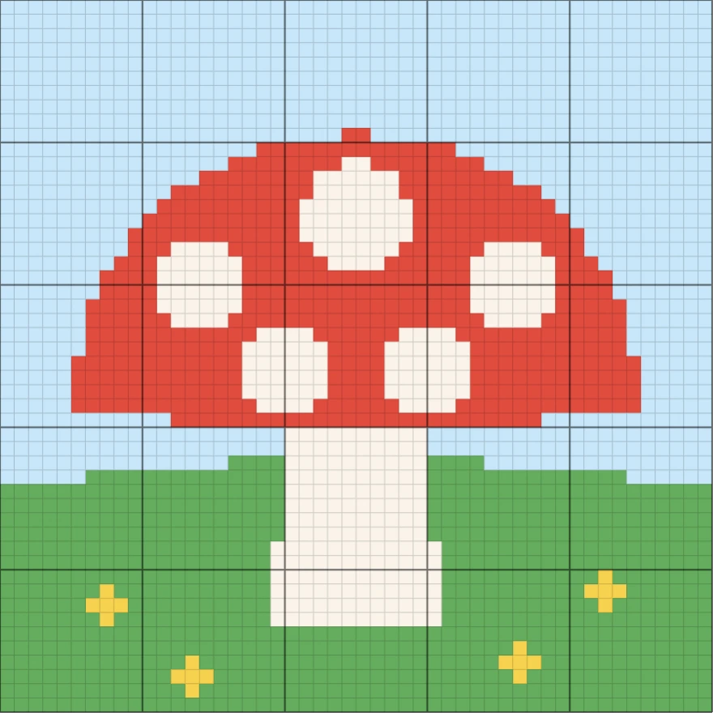

Reihenzähler für jedes Projekt
Zähler für Reihen, Maschen und Wiederholungen, mit Erinnerungen wie „in Reihe 24 abnehmen“.
- Großer Fokus-Zähler, den du ohne Hinsehen antippst
- Timer, Fotos und Notizen
Nie wieder die Reihe verlieren. YarnSpace bringt deine Projekte, Anleitungen und deinen Garnvorrat an einen Ort, auf iPhone, iPad, Mac und Apple Watch.
Für iPhone, iPad, Mac und Apple Watch · in 5 Sprachen



Alles, was du beim Stricken und Häkeln brauchst, ohne zwischen Reihenzähler-App, Notizen und Tabelle zu wechseln.
Zähler für Reihen, Maschen und Wiederholungen, mit Erinnerungen wie „in Reihe 24 abnehmen“.
Zähl am Handgelenk, während deine Hände an den Nadeln bleiben.
Eigene PDFs und Links, dazu Ravelry-Anleitungen mit Filtern und Bewertungen.
Jedes Knäuel, das du hast, und eine Wunschliste für die, die du willst.
Alternativen nach Maschenprobe, Lauflänge und Faser, auch vegan, direkt verglichen.
Die Rechnerei übernimmt die App, direkt neben deinen Projekten.
Eine App, die sich auf jedem Bildschirm zu Hause fühlt, und deine Projekte gleichen sich über deine iCloud ab.








Tippe nach jeder Reihe aufs Plus, während deine Hände an den Nadeln bleiben. Ein kurzes Antippen am Handgelenk für jede Reihe, ein kräftigeres bei einer fälligen Erinnerung, und deine Reihe per Widget auf dem Zifferblatt.
Die Apple-Watch-App gehört zu YarnSpace Pro.


Wähle ein Foto und erhalte ein Zählmuster für Jacquard, Tapestry-Häkeln oder Kreuzstich, passend zu deiner Maschenprobe, damit nichts gestaucht wird. Arbeite direkt danach und hake Maschen beim Arbeiten ab.
Zählmuster erstellen ist kostenlos. Speichern und Abhaken gehören zu YarnSpace Pro.
YarnSpace liest Marke, Farbe, Faser, Lauflänge, Maschenprobe und Nadelstärke von der Banderole und füllt das Garn für dich aus, abgeglichen mit Ravelry.
Gelesen wird nur auf deinem Gerät; das Foto wird weder gespeichert noch hochgeladen.
Bei jeder Anleitung prüft YarnSpace, ob dein Vorrat das passende Garn hat oder eines, das sich genauso verarbeitet, ob es reicht und wie viele Knäuel noch fehlen.
Kein Konto und kein Tracking, nur eine anonyme Nutzungsstatistik, die du ausschalten kannst. Deine Projekte, Anleitungen, dein Vorrat und deine Fotos liegen auf deinem Gerät und, wenn du willst, in deiner eigenen iCloud, wo nur du sie siehst.
Das meiste in YarnSpace ist kostenlos. Pro bringt die Apple Watch, Garnalternativen und mehr dazu.
Kostenloser Download
Ohne Zeitlimit, ohne Konto.
Monats- oder Jahresabo
Jederzeit in den Einstellungen deines Apple Accounts kündbar.
Praktische Ratgeber für die Fragen, die beim Stricken und Häkeln auftauchen, mit durchgerechneten Zahlen.
Maschenprobe vergleichen, Faser beachten und die Knäuelzahl ausrechnen.
Das richtige Bild wählen, an die Maschenprobe anpassen, wenige Farben nehmen.
Warum sie wichtig ist, wie du misst und was du tust, wenn sie nicht passt.
Zu- oder Abnahmen auf eine Reihe oder über viele Reihen verteilen.
Strick- und Häkelnadeln in mm, US- und UK-Größen.
Aus der Anleitung ausrechnen oder, ohne Anleitung, aus einer Maschenprobe.
Weitere RatgeberMaschenanschlag berechnenPullover-MaschenzahlGarnstärken-TabelleHäkelschrift US/UKBanderole lesen
YarnSpace alsReihenzähler-AppGarnvorrat-AppRavelry-AppHäkel-App
Ja. YarnSpace kannst du kostenlos laden und für bis zu drei Projekte gleichzeitig nutzen, mit allen Zählern, deinem Garnvorrat, Anleitungen und den meisten Werkzeugen. YarnSpace Pro gibt es im Monats- oder Jahresabo mit einer Woche gratis. Es schaltet unbegrenzt viele Projekte, die Apple-Watch-App, alle Garnalternativen, den Banderolen-Scan und mehr frei.
Ja. Zähler, Anleitungen, Garnvorrat und Rechner funktionieren für Stricken und Häkeln gleichermaßen. Zum Nachschlagen gibt es Strick- und Häkelnadelstärken sowie die Häkelbegriffe auf US- und UK-Englisch.
Nein. Anleitungen und Garne auf Ravelry kannst du ohne Konto entdecken und durchsuchen. YarnSpace stammt nicht von Ravelry, ist nicht mit Ravelry verbunden und wird nicht von Ravelry unterstützt.
Auf iPhone und iPad ab iOS 26, auf dem Mac ab macOS 26 und auf der Apple Watch ab watchOS 26. Deine Projekte gleichen sich über deine eigene iCloud ab.
YarnSpace braucht kein Konto und verfolgt dich nicht; es gibt nur eine anonyme Nutzungsstatistik, die du ausschalten kannst. Deine Projekte, Anleitungen, dein Garnvorrat und deine Fotos liegen auf deinem Gerät und, wenn du es einschaltest, in deiner eigenen iCloud. Alles Weitere steht in der Datenschutzerklärung.
Halte die Kamera auf die Banderole. YarnSpace liest Marke, Garnname, Farbnummer, Fasern, Lauflänge, Maschenprobe und Nadelstärke vollständig auf deinem Gerät und füllt das Garn für dich aus.
YarnSpace gibt es im App Store, für iPhone, iPad, Mac und Apple Watch. Kostenlos laden.